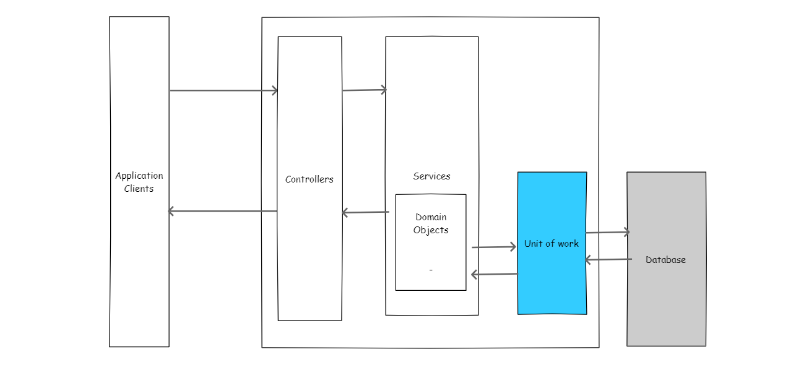
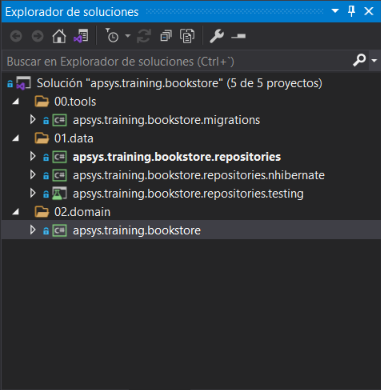

Introducción
El presente material establece una guía sobre como inicializar, configurar, verificar e implementar una capa de acceso a datos para los proyectos backend de APSYS. Para ejemplificar de manera práctica, se desarrollará el código requerido para un proyecto llamado bookstore
Arquitectura de un backend
Las aplicaciones de backend desarrolladas generalmente siguen un organización de capas como la que se muestra en la imagen a continuación

Esta guía explica como realizar la implementación usando los patrones de diseño unitOfWork y repository. Para mayor documentación sobre estos patrones de diseño, puedes consultar las referencias:
https://martinfowler.com/eaaCatalog/unitOfWork.html https://martinfowler.com/eaaCatalog/repository.html
Inicialización de un proyecto
Crea una solución en blanco usando Visual Studio 2017 o 2019, con el nombre apsys.training.bookstore.sln. Dentro de esa solución agrega los siguientes proyecto, organizados como se muestra a continuación
| Proyecto | Tipo de proyecto | Carpeta |
|---|---|---|
| apsys.training.bookstore | Biblioteca de clases | 02.domain |
| apsys.training.bookstore.repositories | Biblioteca de clases | 01.data |
| apsys.training.bookstore.repositories.nhibernate | Biblioteca de clases | 01.data |
| apsys.training.bookstore.repositories.testing | NUnit | 01.data |
| apsys.training.bookstore.migrations | Aplicación de consola | 00.tools |

Definición del dominio
La capa de datos se encarga de persistir y recuperar nuestras entidades del dominio de una base de datos, por lo que necesitamos de primera instancia entidades en nuestro dominio.
Agrega las siguientes clases a el proyecto apsys.training.bookstore
public class Author
{
public string Id { get; set; }
public string FirstName { get; set; }
public string LastName { get; set; }
public IEnumerable<Book> Books { get; set; }
}
public class Book
{
public string Id { get; set; }
public string Title { get; set; }
public string ISBN { get; set; }
public string Genre { get; set; }
public DateTime PublishDate { get; set; }
public Author Author { get; set; }
}